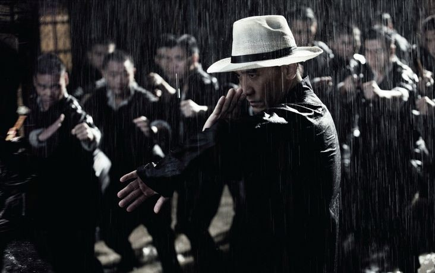
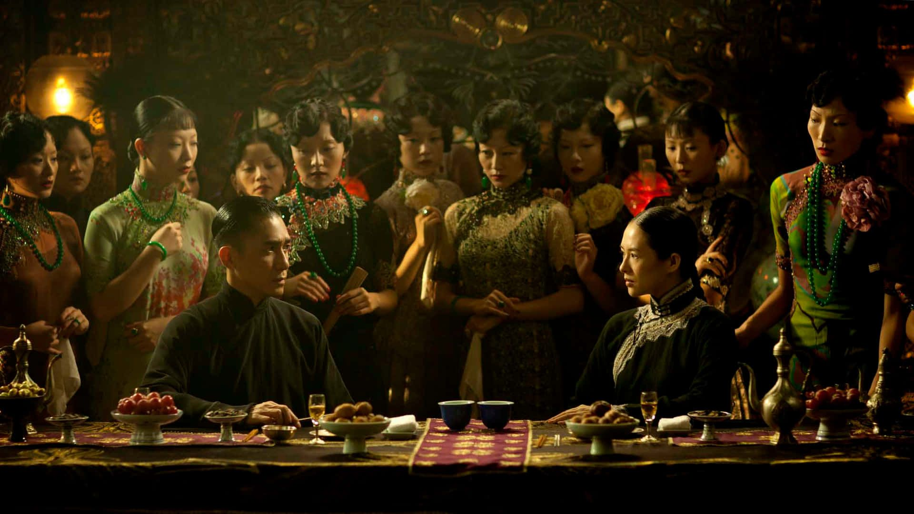

A Cultural Companion · Volume Two · Scene Explained
The Grandmaster
一代宗師 · Yi Dai Zong Shi
Directed by Wong Kar-wai · 2013
✦
Spoilers ahead: This companion volume unpacks specific scenes, reveals what becomes of each character, and gathers the film's key lines of dialogue. It is meant to be read alongside the film, or after it — or after the spoiler-free Background Guide — whenever you want a scene's meaning drawn out. If you have not watched yet and would like to stay unspoiled, begin with the Background Guide instead and return here once the lights come up.
Play While You Read · The Score
Part One
The Opening of the Film, Explained
The early scenes are a ritual of jianghu politics. Gong Yutian travels south to Foshan with his chosen heir Ma San, announcing his retirement and seeking to pass the torch to a Southern successor — something symbolically enormous, acknowledging that the future of Chinese martial arts must bridge both worlds. Various Southern masters challenge the Northern delegation, but all are defeated by Ma San fighting on Gong Yutian's behalf. The Southern masters then select Ip Man as their candidate. The tests Ip Man faces before reaching Gong Yutian are not mere fights; they are proof of whether he is worthy to represent the entire South in this negotiation.

The opening fight in the rain — Ip Man stands alone against many under the downpour.The Grandmaster (2013) · dir. Wong Kar-wai
Part Two
The Golden Pavilion — When North Met South
Ip Man's encounter with Gong Yutian does not end as a fight. The two men trade philosophical ideas over a flat cake — Gong Yutian dares Ip Man to break it, using it as a metaphor for Chinese unity and the relationship between North and South. Gong Yutian concedes and symbolically passes his reputation to Ip Man.

The Golden Pavilion — Ip Man and Gong Er among the assembled company.The Grandmaster (2013) · Tony Leung & Zhang Ziyi
Gong Er's challenge follows directly from this — her father has given away the family's standing, and she intends to reclaim it herself. Their match at the Golden Pavilion is governed by terms that are themselves a philosophical statement: whoever breaks a piece of furniture loses, because kung fu is about precision. At close quarters in the narrow stairwell, the fight reaches its most intimate moment: Gong Er strikes and, in doing so, falls naturally into Wing Chun — Ip Man's own style. He notices immediately. He smiles, briefly, then answers her with Baguazhang — her style. The exchange lasts only a moment, but it is the film's most eloquent image of what these two people are to each other: 英雄相惜 (yīng xióng xiāng xī) — the wordless recognition between great equals, kindred spirits who have truly met their match. Two traditions briefly become one; two people who can never be more than rivals share something that goes beyond rivalry entirely. Gong Er wins: Ip Man breaks a stair step when he instinctively reaches to catch her from a fall. The care he shows in that moment is what costs him the match — and it is the first sign of something more than rivalry between them.
The Golden Pavilion — Gong Er and Ip Man, in a duel where breaking the furniture means losing.The Grandmaster (2013) · Tony Leung & Zhang Ziyi
Part Three
Key Characters
叶问 · Ip Man
梁朝伟 · Tony Leung Chiu-wai
The historical grandmaster of Wing Chun who would later train Bruce Lee. In the film, he is a cultured gentleman from the prosperous city of Foshan — educated, well-married, and respected. The Japanese invasion strips him of everything: his wealth, his home, his wife, his children (who starve during the occupation). He ends the film a widower teaching in a small Hong Kong school, but carrying his art forward with complete dignity. Tony Leung trained in Wing Chun for four years for this role.
宫二 · Gong Er
章子怡 · Zhang Ziyi
The film's second protagonist — and arguably its most tragic figure. Gong Er is the daughter of the Northern grandmaster Gong Yutian. Highly skilled in Baguazhang, she was never officially designated her father's heir because of her gender. Yet when her father concedes his reputation to Ip Man — symbolically passing the family's standing to the South — it is Gong Er who steps forward to take it back. She challenges Ip Man and wins, proving herself the true heir in the one arena where gender is irrelevant: the fight itself. After her father's death at the hands of his traitorous disciple Ma San, she takes a vow of vengeance and celibacy, sacrificing her personal happiness to uphold family honour. Her arc is about what tradition demands of a woman, and what it costs.
宫羽田 · Gong Yutian
王庆祥 · Wang Qingxiang
The grandmaster of Northern Chinese martial arts — the greatest living master at the film's opening. His journey south is both a retirement ceremony and a search for someone who can keep the tradition alive. His brief but pivotal match with Ip Man is a meeting of equals, conducted with extraordinary mutual respect. He is killed by his own disciple after the Japanese invasion.
丁连山 · Ding Lianshan
赵本山 · Zhao Benshan
Gong Yutian's 師兄 (martial elder brother — they trained under the same master), known as "the Ghost of Guandong." He appears briefly but carries enormous weight. He introduces one of the film's sharpest distinctions: 面子 (miànzi) versus 里子 (lǐzi) — the visible face versus the hidden lining. Gong Yutian is the 面子 of the Northern martial world, its public grandmaster; Ding Lianshan is the 里子, the power that operates entirely in shadow. In 1905, he killed a Japanese ronin who was marking circles in the street and declaring them Japanese territory — and chose to spend the rest of his life as a fugitive rather than face the consequences. His exchange with Gong Yutian cuts to the core of jianghu values: asked whether it is easier to lead a school or to roam the world as a fugitive, Gong Yutian says leading a school — so Ding Lianshan chooses the harder path. The casting of Zhao Benshan, China's most celebrated comedian, is itself a signal: this unexpectedly grave performance makes the character's sacrifices land harder than any conventional dramatic actor might have.
马三 · Ma San
张晋 · Zhang Jin
Gong Yutian's chosen heir in the North — and the film's primary villain. His betrayal of his master (collaborating with Japanese occupiers and killing Gong Yutian) is the ultimate moral transgression in this world: a disciple murdering his shifu. In jianghu terms, he is beyond redemption, which is why Gong Er's vengeance is understood by every character as not just personal but righteous.
一线天 · Yixiantian "The Razor"
张震 · Chang Chen
A master of Bajiquan who serves as a third strand of the film's martial arts world. His story — escaping Japanese-occupied China with Gong Er's help, then reinventing himself as a barber and secret Bajiquan teacher in Hong Kong — mirrors the theme of tradition persisting in exile. His nickname "The Razor" carries double meaning: his blade-sharp fighting technique and his literal occupation.
Part Four
奉道 — Fèng Dào — Gong Er's Vow, The Solitary Path
When Gong Er cuts her hair and takes her vow, the film gives it a specific name: 奉道 (fèng dào) — literally "to follow the Way." In jianghu, it means committing to a form of life most people would recognise as total sacrifice: no marriage, no disciples, no heirs. Whatever art or knowledge you carry, you carry alone, and you take it with you when you die.
奉道 — Gong Er cuts her hair and takes the solitary vow, anchoring herself to her father's name.The Grandmaster (2013) · Zhang Ziyi as Gong Er
奉道 (fèng dào) is not a religious vow — there is no temple, no ordained ceremony. It is a declaration made within jianghu, witnessed by the martial arts world. Not everyone has the right to make it: only a practitioner of sufficient standing is considered eligible.
The specific trigger for Gong Er's vow matters. When she first moves against Ma San after her father's murder, he stops her with a point of ritual law: she is betrothed. Under the 礼法 (lǐfǎ) — the ritual codes that governed traditional Chinese social life with the force of law — a woman who has been promised in marriage is no longer fully a member of her birth family. She belongs, in the eyes of custom, to her future husband's house. Ma San tells her directly: she has no right to avenge her father, because she is no longer truly a Gong.
Her response is to break off the engagement, cut her hair, and take the 奉道 (fèng dào) vow — permanently anchoring herself to her father's name. She is warned before she does it:
奉了道，你这一辈子就不能嫁人，不能传艺，更不能有后。那可是回不了头的。
"Once you take this vow, you can never marry, never pass on your art, never have children. There is no going back." — the Gong family retainer, to Gong Er, The Grandmaster
She understands the price. She pays it. This is why the extinction of the Gong family's 64 Hands is not an accident of history — it is a deliberate choice, the cost of winning the right to be, unambiguously, her father's heir.
Part Five
老猿挂印回首望 — The Move That Connects Father and Daughter
老猿挂印回首望 is a technique from the Gong family's 六十四手 (Sixty-Four Hands) — the highest set of Baguazhang moves in their lineage, never formally passed to Ma San. The name translates as "Old ape hangs the seal, turns to look back." It has two parts: 老猿挂印 (the ape hanging the seal) is a devastating knee strike to the chest — a lethal blow. The second half, 回首望 (turning to look back), is a sudden pivot that sends the opponent away behind you. Gong Yutian insists the technique's meaning lives entirely in the second part: 老猿挂印回首望，关隘不在挂印，而是回头 — "The key is not in the strike. The key is in turning back."
When Gong Yutian uses this move against Ma San before his death, he does not deploy it at full force. He neutralises Ma San's attack and sends him away. He could have broken his arm. He could have killed him. He does not. The killing blow — the 挂印 (hanging the seal) — is withheld; only the 回首望 (turning to look back) is completed. The move is a lesson delivered in martial form: there is still a path back. He is offering his disciple a last chance to step away from collaboration, from betrayal, from the road he is on.
Ma San does not turn back. He kills Gong Yutian.
Years later, in a snow-covered Manchurian train station under Japanese occupation, Gong Er confronts Ma San and uses the Gong family's 64 Hands — including 叶底藏花 ("flowers hidden beneath leaves" — striking where least expected) to counter his 老猿挂印 (hanging the seal). Where her father had withheld the 挂印 (hanging the seal) and completed only the 回首望 (turning to look back), Gong Er's 回首望 (turning to look back) is now the instrument of defeat: the pivot and throw that sends Ma San crashing into the train. She also breaks his meridians, permanently ending his ability to practice martial arts. The vengeance is exact: not death, but the permanent destruction of the thing he valued most.
The Manchurian train station — Gong Er reclaims the Gong family's 64 Hands against Ma San in the snow.The Grandmaster (2013) · Zhang Ziyi & Zhang Jin
Ma San's final words show that he understood his teacher's lesson only at the moment of its completion, too late:
老爷子说"老猿挂印"的关隘是"回头"，当时我没听懂，以为是他慢了。宫家的东西，我还了。
"The Old Master said the key to 老猿挂印 (hanging the seal) is turning back. I didn't understand at the time — I thought he had simply slowed down. What belongs to the Gong family — I return it." — Ma San, to Gong Er, The Grandmaster
He had mistaken his teacher's deliberate restraint for physical decline. Gong Er's reply allows him nothing:
话得说清楚，宫家的东西是我自己取回来的。
"Let's be clear. I took back what belongs to the Gong family myself." — Gong Er, to Ma San, The Grandmaster
The Gong name was never his to return.
Gong Er confronts Ma San in the snow-covered Manchurian train station.The Grandmaster (2013) · Zhang Ziyi & Zhang Jin
老猿挂印回首望 is the thread that connects father and daughter. Gong Yutian encoded a moral choice inside a martial move and offered it to his disciple. Ma San refused it. Gong Er — wielding the same family art that Ma San was never trusted with — used it to close that door permanently. The move is about second chances. The tragedy is that Ma San understood the offer only once it had expired.
我爹常说习武之人有三个阶段：见自己，见天地，见众生。我见过自己，也算见过天地，可惜见不到众生。这条路，我没走完，希望你能把它走下去。
"My father often said that martial artists go through three stages: seeing yourself, seeing the world, seeing all beings. I have seen myself, and I suppose I have seen the world, but I could never see all beings. I did not finish this path. I hope you will walk it to the end." — Gong Er, The Grandmaster
Part Six
Themes and Scenes to Watch For
Time and loss — The film's Chinese title, 一代宗師, means "Grandmaster of a Generation." That phrase is elegiac at its core: greatness defined by its historical moment, which has passed. Notice how characters speak of a "golden age" — they are mourning it in real time even as they live it.
What gets passed on, and what is lost forever — Every character in the film is wrestling with the question of legacy. Ip Man succeeds in passing on Wing Chun; Gong Er deliberately extinguishes her family's art to preserve its honour. Watch who takes students and who refuses to — this is the film's deepest moral question.
Unfulfilled love as a form of honour — The connection between Ip Man and Gong Er is felt but never acted upon. Both are bound by loyalty — he to his wife, she to her vows. Wong Kar-wai has built his career on this kind of restrained longing. This is not Western courtly love — it is something specifically Chinese about how honour and feeling are permitted to coexist. Watch for the coat button near the film's end: Ip Man once bought a heavy winter coat intending to travel north to visit Gong Er, a journey that poverty, and then history, made impossible. The coat had to be pawned. He kept one button. When he finally gives it to her, it is the only physical form his feelings ever take — a small disc of cloth and metal standing in for a coat, a journey, and a life unlived. Listen for the moment Gong Er gives the feeling its only direct words:
说句真心话，我心里有过你。喜欢人不犯法，可我也只能到喜欢为止了。
"To tell you the truth, I've had you in my heart. There's no law against loving someone. But loving you is as far as I can go." — Gong Er, The Grandmaster
Ip Man and Gong Er — a feeling held to the very end, but never acted upon.The Grandmaster (2013) · Tony Leung & Zhang Ziyi
Rain, gold, and snow — the film's visual language — The opening fight in the rain is not just spectacle; rain in Chinese visual tradition is associated with melancholy and memory. The golden light that suffuses the 1930s Foshan sequences is Wong's visual shorthand for a world that glows with the warmth of what is about to be destroyed. The snow-swept Manchurian sequences are bleakness incarnate — the North, conquered and frozen.
The body as philosophy — In Chinese martial tradition, how you move expresses how you think. Pay attention to the contrasts: Ip Man's linear, direct strikes versus Gong Er's circular evasions; the explosive contact of Bajiquan versus the spiralling flow of Baguazhang. These are not just fighting differences — they are worldviews made physical.
Dignity in defeat and in poverty — Watch how characters carry themselves after they have lost everything. Ip Man's years of near-starvation during the occupation are shown without self-pity. Masters who were once wealthy now teach in cramped rooms with absolute equanimity. This composure is a moral statement: the art is not diminished by the circumstances of its practitioner.
The South-North reunion that never comes — The film's central narrative promise — that Ip Man will unite the Southern and Northern martial arts worlds — is never fulfilled, because history destroys the world in which that reunion was possible. The film is about a reconciliation that history made impossible, and the people who carried the dream of it into exile.
· · ·
往后的路，你是一步一擂台。希望你像我一样，凭一口气点一盏灯。要知道，念念不忘，必有回响。有灯，就有人。
"From here on, every step is a challenge. I hope you, like me, will keep a single breath to light a lamp. Know this: hold something in your heart without forgetting, and it will echo back. Where there is a lamp, there is someone." — Gong Yutian, The Grandmaster
Ip Man and Gong Er — a quiet, restrained moment.The Grandmaster (2013) · Tony Leung & Zhang Ziyi